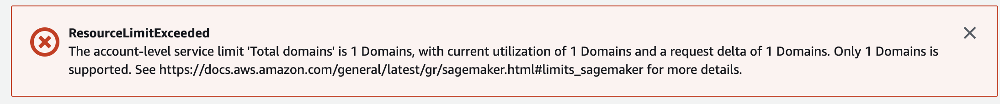
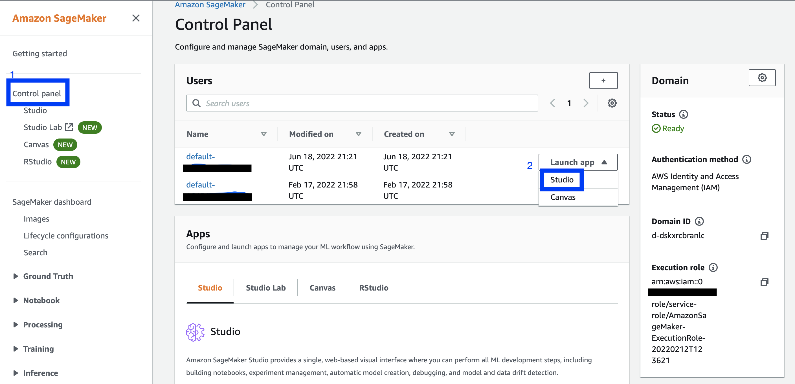
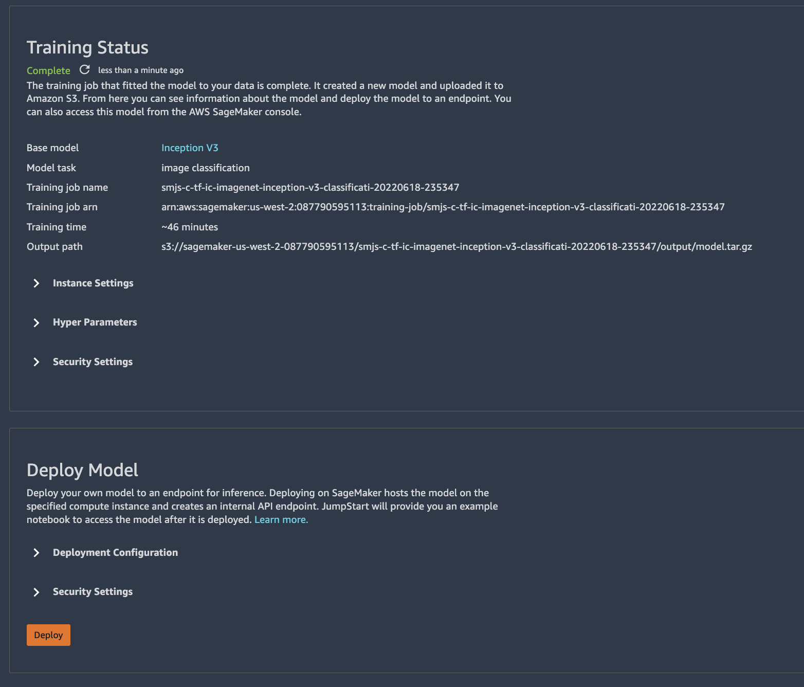
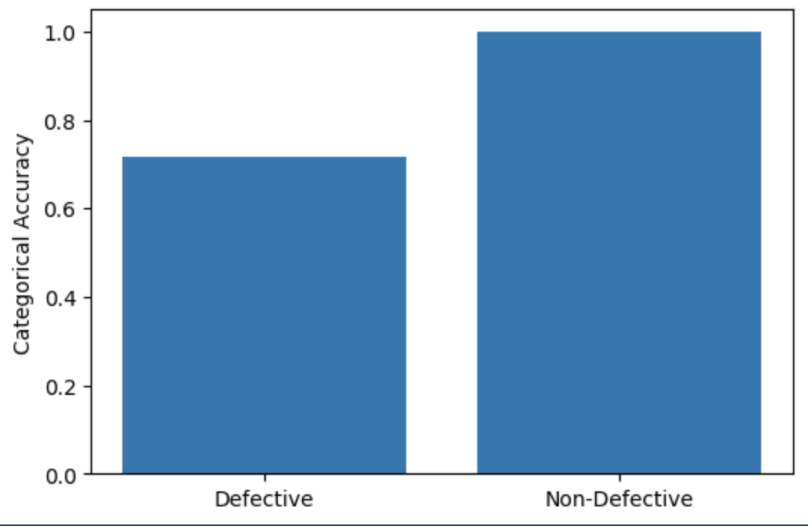

Somewhat easy to use, but black-box-y
SagaMaker terminology
First of all, I found the landing page for SageMaker to be a little confusing.
The first thing you need to do is create a "domain". What is a domain? It's kind of like an enclave of relevant AWS services and infrastructure that supply your machine learning environment. From the AWS Documentation, a SageMaker Domain "consists of an associated Amazon Elastic File System (Amazon EFS) volume; a list of authorized users; and a variety of security, application, policy, and Amazon Virtual Private Cloud (Amazon VPC) configurations. An AWS account is limited to one Domain per Region. Users within a Domain can share notebook files and other artifacts with each other." It feels like there could be a better word for this, but as with many things AWS, we'll just have to accept the jargon they've chosen.
While we're defining things, we might as well touch upon two other concepts that are foundational to the inner working of SageMaker: - User Profile: From the docs: "A user profile represents a single user within a Domain, and is the main way to reference a user for the purposes of sharing, reporting, and other user-oriented features. This entity is created when a user onboards to the Amazon SageMaker Domain." - You couldn't always share Notebooks within SageMaker, so I imagine this is a way to keep track of who is creating, doing, modifying, etc what.
- App: Again, from the docs: "An app represents an application [KF note: no kidding] that supports the reading and execution experience of the user’s notebooks, terminals, and consoles. The type of app can be JupyterServer, KernelGateway, RStudioServerPro, or RSession. A user may have multiple Apps active simultaneously."
- It's the platform upon which you create and run notebooks, endpoints, etc. Again, "app" feels like an ambiguous and sub-optimal term for this, but whatevs.
Getting Started, again
Back to me and my SageMaker experience: turns out I had already created a Domain from a tutorial a few months back (I was preparing for my AWS Machine Learning Specialty Certification exam), so clicking on 'Getting Started' and following the steps results in a warning that I couldn't create more than one domain. Cool, but how about you provide me a shortcut to said existing domain from the launch page?

Also, by doing this, you'll create another user profile (which shows up under 'Users', as a new 'Name' entry). Which is an unwanted consequence. (To delete this new user, click on the User name, then orange 'Edit' button in lower right, then 'Delete user', plus then some confirmations.)
Don't make the AWS n00b mistake of not changing the Region you're navigating resources in (particularly important if your "local" region is not the default East-Coast-centric one of N. Virginia). 'Cause then you'll be confused why you can't find what you did yesterday. (Or so I hear...)
Coming back to an existing Domain
So, if you've already created a Domain, I think the click-path to follow from the launch page is: from the left-hand side menu, click on 'Control Panel' (or, less directly, 'SageMaker Dashboard', then 'Open SageMaker Domain'). Then, from the Control Panel page, under Users, next to a user, click the 'Launch App' drop down, then select 'Studio'. Launching a Studio App will redirect you to a JupyterLab server.

Ignore `Control Panel / Studio' on the side menu from the main page, and the 'Apps' section on the Control Panel page, unless you want to read about them but not actually launch anything (at least not in a manner that I could ascertain.)
Or you can go to 'Notebook instances' and create one from there. But Studio seems to be the new product they are pushing, so if you're new, it's probably worth learning Studio.
FUN FACTS - There is no easy way to get back to the Studio page from the Jupyter server. So, either keep this link handy: https://console.aws.amazon.com/sagemaker/, or when you navigate to the 'Control Page' page, open it in a new tab or window. - If you have a notebook instance running in Studio, it won't show up under 'Notebook instances' from the main SageMaker launch page. The former is techincally on a Studio instance (EC2 / machine).
Studio
JumpStart
Once in Studio JupyterLab server, I decided to try Jumpstart. "Accelerate your machine learning workflows with one-click access to popular model collections." DEFINE JumpStart more better I figured it was worth a try. I'm a somewhat experienced Data Scientist, I've written training and tuning code by hand. But surely, if Amazon is offering to do it all for me, it must be amazing.
...
But let's back up. What was I trying to do? My goal was to develop an app or tool called "Good Chip, Bad Chip", inspired by a dataset of images of defective and non-defective Lay's potato chips I found on Kaggle. The idea was a user could upload a picture of a potato chip to the app, and find out if it was defective or acceptable. (Yes, this is kind of a dumb idea -- pretty much on par with Hot Dog / not Hot Dog. But it seemed like a fun enough side project to 1. train a Computer Vision (CV) model and 2. play around with AWS architecture and serivces.
First, I uploaded the images to an S3 bucket. Then, I created a Jumpstart training job using the Inception V3 model. I tweaked the default hyperparameters (3 epochs? excuse me? Also, batch size is typically 32, not 4. A learning rate of 0.05 struck me as large. Especially if your batch size is small) and I pointed the training job to my S3 bucket. But I encountered an error: ClientError: Data download failed:failed to download data. 403 Forbidden (403): Forbidden.
After some hair-pulling and Googling, I finally discovered an actually helpful documentation page: (emphasis added)
"The IAM managed policy, AmazonSageMakerFullAccess ... only grants ... permission to perform certain Amazon S3 actions on buckets or objects with SageMaker, Sagemaker, sagemaker, or aws-glue in the name."
The page goes on to explain how to add an additional policy to an execution role to grant it access to other Amazon S3 buckets and object. Mega-helpful, this page. So, to the "AmazonSageMaker-ExecutionPolicy-xxx" IAM policy that is attached to the SageMaker Execution Role, I added the line "arn:aws:s3:::pepsico-potato-chip-dataset/*" under Resources.
How-to aside
To find the policy, go to IAM > Roles, then search for "SageMaker-Execution". This will list the policies associated with this Role. You want the ExcectionPolicy one. The final policy looked like this:
{
"Version": "2012-10-17",
"Statement": [
{
"Action": [
"s3:ListBucket"
],
"Effect": "Allow",
"Resource": [
"arn:aws:s3:::SageMaker"
]
},
{
"Action": [
"s3:GetObject",
"s3:PutObject",
"s3:DeleteObject"
],
"Effect": "Allow",
"Resource": [
"arn:aws:s3:::SageMaker/*",
"arn:aws:s3:::pepsico-potato-chip-dataset/*"
]
}
]
}
Now, launching the training job proceeded without error! If I had to do it again, however, I'd give the training job a more descriptive name -- not the default one. Or, I'd take notes. Or use MLFlow.
Evaluating the model
Typically, when we are done training a model, we'd evaluate it against our test or hold-out dataset. Or, first and more correctly, we'd examine the model's performance against a validation dataset during training. JumpStart makes no mention of (a) whether it's doing this (I have to imagine it is) or (b) what those results are. You also aren't given a choice of what objective / loss function to train your model on (though CrossEntropy is pretty generic and probably what they use), or evaluation metric(s). My dataset was balanced, but if yours isn't, I'm curious how JumpStart performs.
Anyway, since this information isn't provided, I decided to evaluate the model "manually".
Thankfully, the Kaggle dataset already has the images split into Train and Test. At least someone's thinking about model evaluation.
First, we need to launch a model endpoint, which we'll use to make inferences or predictions. It's as easy as clicking the "Deploy" button that appears when your training job is complete.

I down-sized the default instance from an ml.p2.xlarge ($1.125/hr) to an ml.m5.large ($0.23/hr) to save money. Besides, the hold-out set only consisted of ~200 images. You'll need to make a note of the Endpoint name and define it in your notebook. Speaking of which, SageMaker provides a handy template for testing out your endpoint, which I modified it a bit to suit my needs.
Grabbing a random Defective and Non-Defective image, I made predictions...both were classified as Non-Defective. Hmm. I reran the code again, and two different random images were predicted correctly. Running through all images, I got:
| Label | Total | Correct | Accuracy |
|---|---|---|---|
| Defective | 92 | 66 | 71.7% |
| Non-Defective | 100 | 100 | 100% |

We seem to be dealing with some inaccuracy in the Defective class. In my next post, I'll see if I can do better, fine-tuning the model (or a different one!) myself. Or, maybe, I'll just forge ahead with building out the pipeline. We'll see if I'm feeling more Data Science-y or Machine Learning Engineer-y...
Cleaning up
HOT TIP - To avoid incurring unexpected charges, select 'File -> Shut Down' to shut down the instance, all kernels, and images (which I haven't talked about). - This does not shut down any endpoints you have created. These cost you money, too! To kill them, from the main SageMaker page: - Inference (from the left-hand side menu) - Endpoints - Select the dot next to the endpoint you want to kill - Actions - Delete, Delete